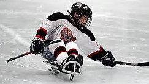

Hockey

Sledge hockey is a form of ice hockey designed for players with physical disabilities affecting their lower bodies. Players sit on double-bladed sledges and use two sticks; each stick has a blade at one end and small picks at the other. Players use the sticks to pass, stickhandle and shoot the puck, and to propel their sledges. The rules are very similar to IIHF ice hockey rules.[19]
Canada is a recognized international leader in the development of sledge hockey, and much of the equipment for the sport was first developed there, such as sledge hockey sticks laminated with fiberglass, as well as aluminum shafts with hand-carved insert blades and special aluminum sledges with regulation skate blades.
Based on ice sledge hockey, inline sledge hockey is played to the same rules as inline puck hockey (essentially ice hockey played off-ice using inline skates). There is no classification point system dictating who can play inline sledge hockey, unlike the situation with other team sports such as wheelchair basketball and wheelchair rugby. Inline sledge hockey is being developed to allow everyone, regardless of whether they have a disability or not, to complete up to world championship level based solely on talent and ability.[citation needed] The first game of inline sledge hockey was played at Bisley, England, on 19 December 2009 between the Hull Stingrays and the Grimsby Redwings. Matt Lloyd is credited with inventing inline sledge hockey, and Great Britain is seen as the international leader in the game's development.